- DO use the photos in the World Vision Digital Media Centre, except those embargoed as indicated by notes in the metadata section
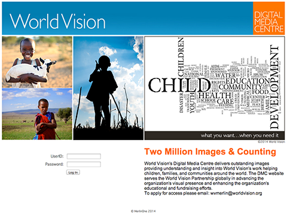
-
DO follow any special instructions noted about use or attribution of the image, such as those requiring special sensitivity due to context or subject matter
-
DO always include a photo credit on Reuters images, or World Vision images that will be hosted on a non-World Vision (third party) site.
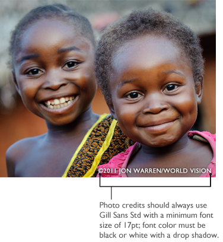
-
DO credit World Vision photos used on a non-World Vision (third party) site as such (©2014 Photographer Name/World Vision)
-
DO use minor digital enhancements as long as they do not change the original meaning or context of the photograph. (ie, color corrections, adjusting contrasts, minor cropping, etc.)
-
DO focus on joyful or hopeful imagery
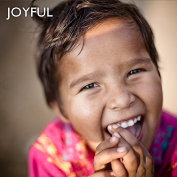
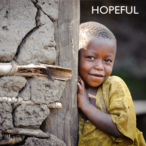
- DO use cutout photographs at your discretion. (Silhouetted photos where background is removed)
-
DO use recent photographs (within the last 3 years) unless older images are called for to provide historical context or information
-
DO protect the identity of a sexually abused person by using silhouettes, shadows, extreme close-ups, or other conventions
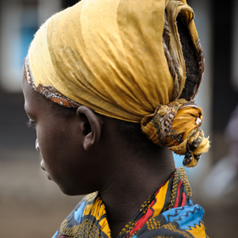
- DO practice sensitivity and compassion when selecting imagery surrounding difficult situations such as famine, HIV, etc.
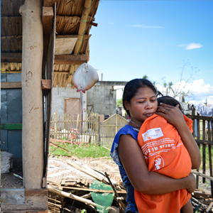
- DON’T “flip” photos or reverse the orientation of an image
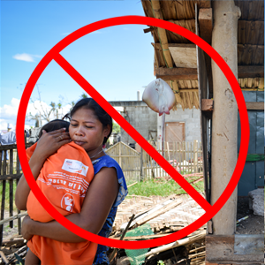
-
DON’T alter a photo so that the meaning or context of the image is changed.
-
DON’T add or remove individuals or content to or from photos.
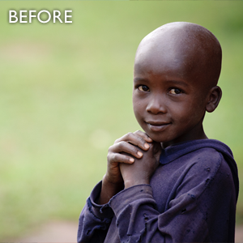
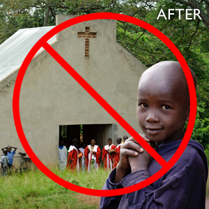
-
DON’T clearly identify a sexually abused person of any age.
-
DON’T alter an image to obscure the identity of a sexually abused individual in such a way that appears to dehumanize the person, such as blacking out of the eyes or face; crop or use silhouettes instead.
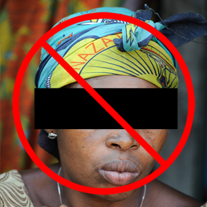
- DON’T use images older than three years except for those being used for historical purposes.
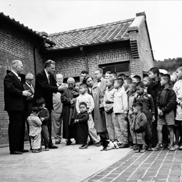
-
DON’T use information from older images that would obviously be rendered inaccurate by the passage of time, such as people’s ages.
-
DON’T cover a subject with overlaid text.
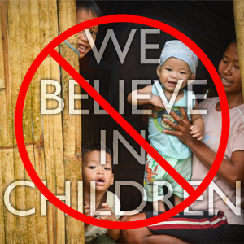